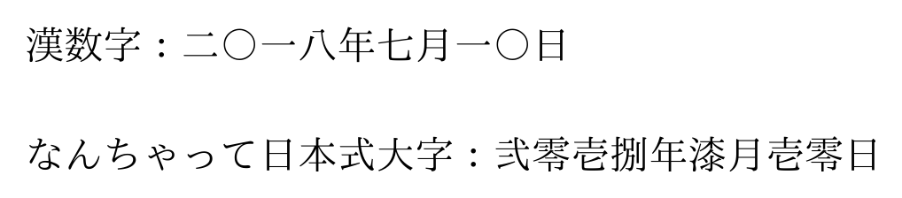

SATySFi で整数を漢数字にするコマンドを作ってみました。
参考: pTeX の \kansuji プリミティブ
コード例
@require: list
@require: stdja
@require: standalone
let kanji-digits = [`〇`; `一`; `二`; `三`; `四`; `五`; `六`; `七`; `八`; `九`]
let daiji-digits = [`零`; `壱`; `弐`; `参`; `肆`; `伍`; `陸`; `漆`; `捌`; `玖`]
let-rec range n =
if n <= 0 then []
else n :: range (n - 1)
% n >= 0 を仮定しています
let digits-of-int n =
let-rec aux n =
if n < 10 then [n]
else (n mod 10) :: (aux (n / 10))
in List.reverse (aux n)
let nth-ignore n lst =
match List.nth n lst with
| Some(s) -> s
| None -> `■`
% 大字は「壱萬」など位取りのある記法には対応していません
let kansuji-of-int ?:is-daiji-opt n =
let (prefix, n) =
if n < 0 then (`マイナス`, -n)
else (` `, n)
in
let digits = digits-of-int n in
let kanjis =
match is-daiji-opt with
| Some(true) -> daiji-digits
| _ -> kanji-digits
in
let kansuji =
List.fold-right (fun n s -> nth-ignore n kanjis ^ s) ` ` digits
in prefix ^ kansuji
let-inline ctx \kansuji-of-int ?:is-daiji-opt n =
let str =
match is-daiji-opt with
| Some(b) -> kansuji-of-int ?:b n
| None -> kansuji-of-int n
in read-inline ctx (embed-string str)
in
standalone '<
+p {
漢数字：\kansuji-of-int(2018);年\kansuji-of-int(7);月\kansuji-of-int(10);日
}
+p {
なんちゃって日本式大字：\kansuji-of-int?:(true)(2018);年\kansuji-of-int?:(true)(7);月\kansuji-of-int?:(true)(10);日
}
>
コード例の組版結果 (SATySFi version 0.0.3)
